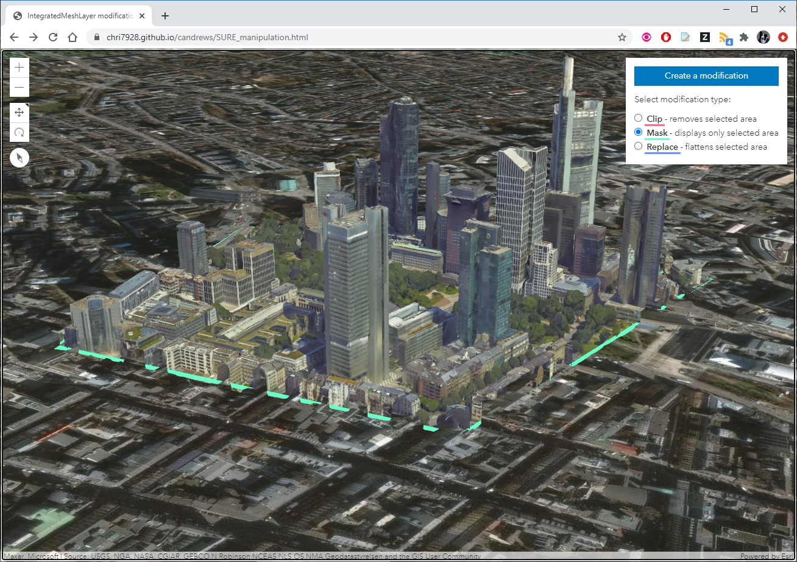

Select modification type:
The ArcGIS API for JavaScript includes the ability to modify I3S integrated mesh scene layers to mask, clip, and replace (flatten) regions of the mesh. The modification happens client-side in the browser and does not modify the underlying data.
To try it out:

Get started!Modifications can also be created on the desktop in ArcGIS Pro and then published along with the scene layer for access from web clients.
The integrated mesh scene layer in this example is used courtesy of Aerometrex!